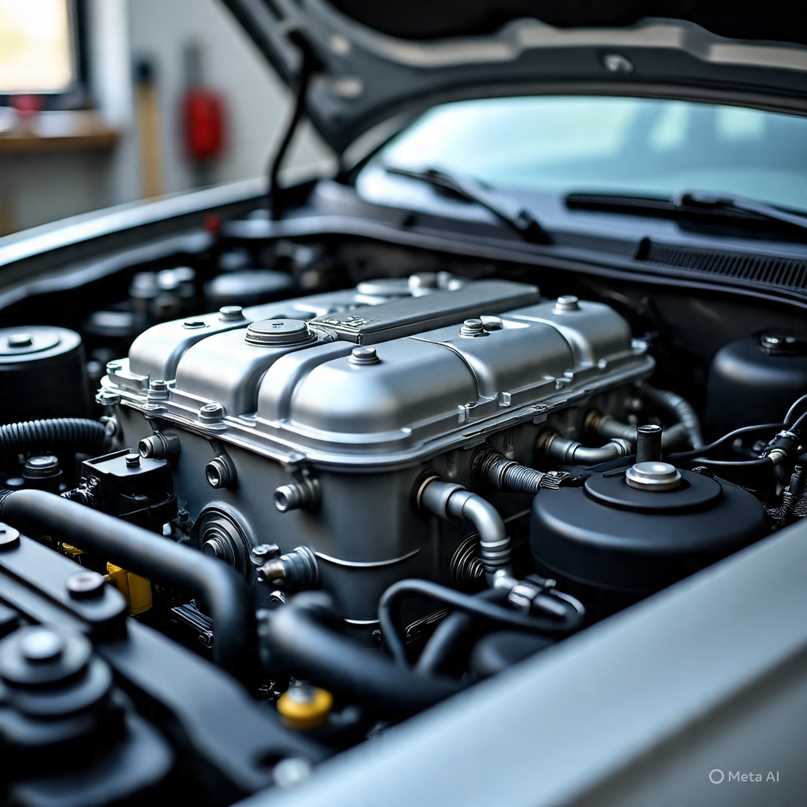

Nosotros
Jhonatan Cabrera, Febr 16, 2026
En el Servicio Mecánico CABRERA, nos dedicamos a proporcionar servicios de alta
calidad para mantener tu vehículo en óptimas condiciones. Nuestro equipo
de profesionales está comprometido con la satisfacción de nuestros clientes
y se esfuerza por ofrecer un servicio personalizado y eficiente.